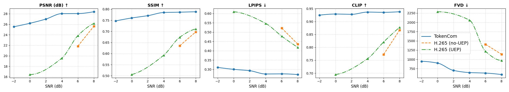
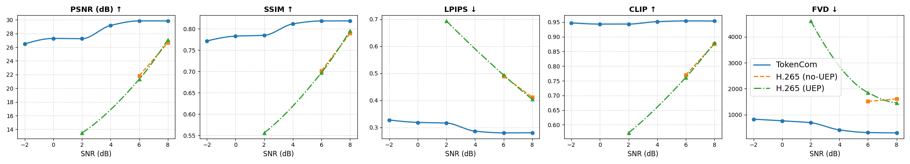

Video Token Communication
UEP · Multi-rate · Intent-guided
Video TokenCom
Textual Intent-guided Multi-Rate Video Token Communications with UEP-based Adaptive Source–Channel Coding
Textual Intent-guided Multi-Rate Video Token Communications with UEP-based Adaptive Source–Channel Coding
In vision and multimodal large models, tokens are the fundamental units of representation and processing. Discretizing video into token sequences compresses data while preserving high-level semantics, which aligns well with transmitting useful information under limited resources in wireless systems. Token Communication (TokenCom) has emerged as a new paradigm: instead of bit-level end-to-end transmission, we operate on semantic token representations for compression and transmission.
Existing work has explored TokenCom for images, multi-user access, semantic packet aggregation, and so on, but video TokenCom is less studied. Most video semantic communication systems use continuous features or task-specific latent codes and do not explicitly exploit discrete video tokens or token-level, intent-aware rate and channel protection.
Inputs are the raw video and a user textual intent description. A pretrained video tokenizer turns the video into a discrete token grid. In parallel, a vision–language model and optical flow find regions that match the textual intent in space and time, and map them onto the token grid to obtain “user-intended” and “non-intended” token sets. Semantic-aware multi-rate coding follows: intended tokens are transmitted at full codebook precision (e.g. 16 bits), while non-intended tokens are encoded differentially at reduced precision relative to a reference frame (e.g. 11 bits), saving bitrate while keeping the quality of regions of interest.
The receiver uses the semantic mask to decode intended tokens from full indices and to recover non-intended tokens as reference plus differential. The tokenizer decoder then reconstructs the video.
Intended and non-intended token streams are treated separately; modulation-and-coding scheme (MCS) and source bit precision are chosen for each. Under a given resource budget, the framework optimizes a weighted combination of distortion and delay, and applies unequal error protection (UEP) so that semantically important content is better protected.
A multimodal, spatio-temporal pipeline identifies “user-intended” tokens.
Multi-rate source coding:
UEP and joint optimization: The two token classes can use different MCS (e.g. QPSK, 16QAM) and channel coding rates. A joint distortion–delay problem is formulated: under bandwidth and resource-block constraints, source bit precision and MCS per class minimize a weighted sum of distortion and delay, subject to reliability (e.g. BLER) constraints. This is a mixed-integer linear program (MILP); with a small candidate set it is tractable per scheduling window.
Decoding and side information: The receiver needs to know whether each token is intended or not. Only the first-frame semantic mask is transmitted; it is propagated over time using lightweight block motion on the token grid (side-information overhead about 1.7% in the paper).
At the same or lower BPP (e.g. 0.013 BPP), the method consistently outperforms H.265 and the diffusion-based VC-DM in PSNR, LPIPS, FVD, etc. On UVG, average PSNR is about 26.36 dB and FVD about 1289. At 6 dB SNR, FVD is reduced by roughly 1500 compared to conventional H.265 transmission. Experiments use MCL-JCV and UVG, with Cosmos video tokenizer and CLIP as the vision–language model.


When the intent changes from “the woman is hitting the man’s mobile phone” to “sky”, the high-precision region shifts from the person and phone to the sky, with similar total bitrate—showing rate allocation follows user intent.
Under different bandwidth budgets and SNRs, the joint optimizer selects different MCS and bit precision. As bandwidth increases, PSNR improves and delay decreases. At low SNR, H.265 often fails to decode a large fraction of frames, while this framework remains decodable across SNRs and is more robust.
Removing textual intent (randomly choosing “non-intended” tokens) degrades CLIP, LPIPS, and FVD at low BDelta, showing that intent-guided rate allocation is important for semantic fidelity.
We proposed a textual intent–guided video TokenCom framework that unifies video tokenization, user-intent extraction, multi-rate source coding, and UEP-based source–channel joint optimization. Under various video and channel conditions, the method achieves better perceptual and semantic quality at low bitrate than conventional H.265 and existing semantic communication baselines, with good channel adaptation.